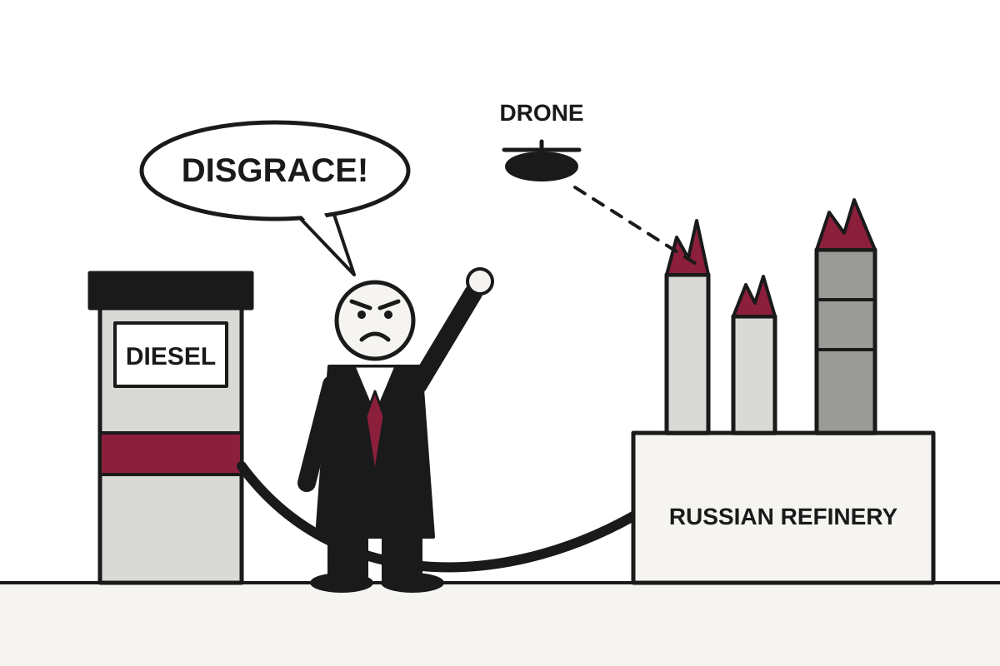

5 Things in 60 Seconds
- President Trump called Ukraine's strikes on Russian refineries a 'disgrace' after the US struck a deal to take 300,000 tonnes of Russian diesel, which makes the target of Kyiv's drones a supplier to Washington.
- Twelve ships reported attacks around the Strait of Hormuz in one week, the most since the war began, as Iran answers US-escorted tanker lanes by redefining where the lane is.
- Masked Israeli settlers attacked Palestinian olive pickers near Abu Falah in the West Bank, injuring 12 including a Washington Post photojournalist, so the harvest now comes with a threat assessment.
- US producer prices rose 6.3% in the year to September, more than forecast, leaving traders to put a one-in-three chance on a Fed rate hike on Oct. 28 while Chair Kevin Warsh declines to say what the Fed will do.
- Anthropic told investors its quarterly revenue rose 45% to $16.8bn and that it was profitable on an adjusted basis, a category whose membership the company decides.

Trump Calls Ukraine's Refinery Strikes a 'Disgrace' After Buying Diesel From the Refineries' Owner
Zelensky says Kyiv is only defending itself, while Washington's new fuel deal with Moscow turns Russian oil infrastructure into something of an American supplier.
The wire said: Zelensky says Ukraine has right to defend itself after Trump calls latest strikes a 'disgrace' · BBC World
President Donald Trump has called Ukraine's latest strikes on Russian oil refineries a "disgrace", and President Volodymyr Zelensky has replied that he is "only standing up for Ukraine's interests", the BBC reported. Trump made the comments in an interview with Newsmax, saying Zelensky was "more difficult to deal with than" Vladimir Putin. It is a rare diplomatic position: criticizing the country being invaded for hitting the country doing the invading.
The reason is diesel. According to the BBC, the US recently struck a deal with Moscow under which 300,000 tonnes of Russian diesel would go to "the American and global marketplace". Translation: the United States has become a customer of the refineries that Ukraine is trying to set on fire. Trump's complaint is that Ukraine's strikes could stop Moscow from delivering its side of the bargain.
Geopolitics

Senators Ask Who Slowed Ukraine's Drones, as Musk Says Not Him, Exactly
A bipartisan group wants the Pentagon's inspector general to explain speed curbs on Starlink in Ukraine, while SpaceX's owner points at the US military.
A bipartisan group of US senators has signed a letter asking the Pentagon's inspector general to investigate disruptions to Starlink in Ukraine, the BBC reported. The letter, led by Democrat Jeanne Shaheen, expresses "grave concern" about speed curbs reported between 12 and 14 October. It is the rare document that Republicans Thom Tillis, Susan Collins, Lisa Murkowski and John Cornyn have signed alongside Democrats Richard Durbin, Jack Reed, Richard Blumenthal and Christopher Coons.
The mechanism is simple. According to the BBC, Starlink limited speeds on Tuesday night to 100mph (160km/h), so any weapon travelling faster than that lost its connection to the network. Translation: the internet stayed on, but anything built to move quickly stopped being able to use it. A drone that cannot talk to its network is, for operational purposes, a very expensive glider.
West Bank Olive Harvest Becomes Race Against Sunrise, Settlers, and Eventual Tear Gas

Masked settlers attacked Palestinian farmers and a Washington Post photojournalist near Abu Falah, as the UN says this harvest is already more violent than all of last year's.
Albania's Prime Minister Blames Foreign Hands for Protests; Protesters Point to Their Own Hands, Holding Rent Receipts

Student-led unrest has spread to at least seven cities, with 152 arrests and 71 injured officers, while Edi Rama rules out resigning and Brussels asks everyone to calm down.
Ship Attacks Near Hormuz Hit Record as Saudi Arabia Learns Allies Come in Symbolic Sizes

Twelve vessels reported attacks in one week while Houthi strikes on Saudi targets test a kingdom that planned to be a tourist destination.
Elsewhere on the wire
Qatar announces ‘massive’ solar plant project in Lebanon Al JazeeraLGBTQ+ people go into hiding in Senegal as hundreds are arrested The GuardianCrowds throng New Delhi and wave Indian flags amid escalating protests NPR WorldIran: When 'honor' becomes a death sentence for women DWHow Israeli firm’s ‘zero-click’ malware attack poses global security risk Al JazeeraZimbabwean author Simbarashe Kundizeza denies using AI to write prize-winning story The GuardianAI

Google's Gemini 4 Argon Aces Hardest Test, Provided Someone Sets Up the Test Correctly
Argon scores 97.5 percent on ARC-AGI-3 with vendor-specific features, but 49.8 percent without them, and its robot demos arrive with extensive written supervision.
Google DeepMind's Gemini 4 Argon scored 97.5 percent on ARC-AGI-3 at a cost of $4,800, according to ARC Prize, making Google the second lab after OpenAI to pass 95 percent. Only OpenAI's GPT-6 Astra scores higher, at 99.9 percent. The Decoder reported that Argon needed 62 percent fewer actions than the human baseline across the 25 public games, which is a polite way of saying it was efficient at games designed to be hard for machines.
The fine print is the test setup. The 97.5 percent came from the Provider Adapter Harness. Translation: a testing arrangement that lets each vendor use its own special features, such as retained reasoning and context compaction, which means the model keeps its thoughts and tidies its own memory between moves. In the Standard Harness, which allows only simple notes between rounds, Argon fell to 49.8 percent at low reasoning, at a cost of $5,800. It is the same model, with a different exam room and a higher bill.
Anthropic Issues Outside Auditors Laptops, Desks, and Right to Say Redactions Were Unjustified

Six METR researchers get employee-level access to Anthropic's systems, and the company has given up the right to veto what they publish, with a few carve-outs.
FTC Asks Anthropic and OpenAI 50 Pages of Questions About What Their Software Did

The regulator sent civil investigative demands over safety incidents, and its chair has already said he considers the tool's alleged independence a poor excuse.
Meta Updates Terms So Its AI Can Read Your Website, Which You Are Welcome to Pay to Link To

New commercial terms effective October 30th let Meta crawl sites tied to business accounts and train AI on them, while Meta says nothing has changed.
Elsewhere on the wire
Jev is Vercel’s fastest-adopted AI model ever TechCrunch AIA week with RTX Spark: everything we’ve learned using Nvidia’s new laptops The Verge AIThe Download: failed social media bans, and extending pets’ lives MIT Technology ReviewSuper Scam Me documentary shows what it takes to catch a romance scammer Ars Technica AIMark Wahlberg on using AI in film ‘the right way’ and being open to an AI clone carrying on his legacy TechCrunch AIThis implant can restore sight for patients with macular degeneration MIT Technology ReviewTechnology

Anthropic Tells Investors It Is Both Very Profitable and Worried About Ending Humanity
The AI firm's revenue rose 45% to $16.8bn in a quarter, and it adjusted its way to a profit, as chip stocks fell on fears about AI spending.
Anthropic has been drumming up support for an expected stock market listing, and according to the BBC, its revenue rose 45% to $16.8bn (£12.7bn) in the three months to the end of September. That follows $4.7bn in the first quarter of the year and $11.6bn in the second. For a company that sells software, this is the kind of growth chart that makes a prospectus nearly write itself.
The company also told investors at its San Francisco headquarters that it made a profit in the third quarter on an adjusted basis. Translation: adjusted profit is profit calculated after leaving out costs the company considers one-off, a category whose membership is decided by the company. The BBC noted that the method ignores non-recurring costs, and investors reportedly left the event optimistic about growth and the path to profitability.
Spyware Firm Discovers Cheapest Way to Reach Journalists: Buying an Ad
Citizen Lab says an Israeli ad broker delivered zero-click spyware to 45 Al Jazeera devices, in what it believes is the first confirmed case of its kind.
Apple's $1,999 Foldable Sells Out for Months Before the Coffee Gets Cold
Delivery estimates for the iPhone Duo slid to late January within an hour of preorders opening, though stores may still have some on October 23rd.
Tesla Roadster Flies Off Ramp, Remains Unavailable on Roads, Shelves, or Calendars

Tesla's rocket-assisted Roadster demo in Waco thrilled viewers, but pricing, range, and road legality were left for a future event, with production now pushed to 2028.
Elsewhere on the wire
Polymarket saw $600 million in election trades after the elections were over Ars TechnicaApple’s HomeView has an app problem The VergeHello Toronto – Waymo Is En Route Hacker NewsAnalogue is re-releasing its SNES and Genesis consoles with some nice upgrades The VergeSnapchat and Instagram grooming becoming 'easier' BBC TechnologyBig Fish: Exploiting a 37-Year-Old Kernel Bug in OpenBSD Hacker NewsMarkets & Economy

Treasury Responds to IMF Debt Warning by Auditing the IMF's Old Homework
A new Treasury counselor says the Fund's forecasts are 'messy' as the U.S. runs a roughly $2 trillion deficit and the 10-year yield sits at 5.19%.
The U.S. Treasury has answered a warning from the International Monetary Fund about American debt by questioning the International Monetary Fund's forecasting. David Zervos, a former Jefferies market strategist who is now counselor to the Treasury Secretary, told CNBC by email that it is 'good to remember how messy their forecasts have been in the past.' It is a classic rebuttal: the smoke detector has gone off before when there was no fire, and has also missed some fires.
Zervos supplied a list. According to CNBC, he said the IMF's outlook in 2008 had world growth at 3% before a global contraction, that it was positive on Southeast Asia before the 1997 collapse, and that it was gloomy on Russia in 2022 when Russia barely dipped. He also cited Argentina, which was in effect back in default by 2020 after a $57 billion bailout. Translation: the referee has made bad calls, so the foul count should be disregarded.
The argument has a structure worth noticing. It attacks the messenger's record, not the arithmetic. And the arithmetic, per CNBC's analysis, is unflattering. The deficit for fiscal 2026 is headed for about $2 trillion, or 6.0 to 6.2% of GDP, based on the Congressional Budget Office's $1.993 trillion estimate. Bessent has argued for a deficit below 4% of GDP by the end of Trump's term, and CNBC's analysis says there is almost no way that happens.
IMF Lifts Growth Forecast Thanks to AI Boom, Then Lists Everything That Could Go Wrong
The fund now expects 3.1% global growth in 2026, while warning that the buffers holding up the world economy are 'rapidly narrowing.'
Fed Chair Declines to Say What Fed Will Do, Calls This Progress

Kevin Warsh says he no longer previews rate moves, even as inflation hits 3.7% and consumers start treating high prices as permanent.
CoreWeave Slides, Taking OpenAI's Unlisted Price Tag Down With It, While Anthropic's Rises

Perpetual futures on a crypto exchange show OpenAI slipping under $1.5 trillion and Anthropic near $2 trillion, as the GPU landlord CoreWeave hits a one-year low.
| Series | Last | Chg | Period | Trend |
|---|---|---|---|---|
| S&P 500 | 7,744.06 | +0.33% | +2.27% | |
| Nasdaq | 26,713.03 | +0.08% | +1.69% | |
| VIX | 16.46 | −0.41 | −0.27 | |
| Brent crude | $126.55 | +0.61% | +51.21% | |
| Dollar index | 121.60 | +0.13% | +0.70% | |
| 2Y Treasury | 4.82% | +0.03 | +0.56 | |
| 10Y Treasury | 5.19% | −0.02 | +0.57 | |
| Fed Funds | 3.88% | ±0.00 | +0.25 | |
| CPI inflation (YoY) | 3.74% | +0.34 | +1.30 | |
| Unemployment | 4.20% | +0.10 | +0.10 |
Elsewhere on the wire
Tesla unveils long-delayed Roadster developed with SpaceX, fueling merger speculation CNBC MarketsI’m 64 with two sons, but only one works in the family firm. Should I leave him 70% of the business? MarketWatchUS federal bankruptcy court operations disrupted by cybersecurity incident Investing.comFederal Reserve Board announces termination of enforcement actions with Gardner Bancshares, Inc. and Small Business Bank Federal ReserveOpenAI Saudi national bugging case shows threat to U.S. leadership in AI: DNI Clayton CNBC MarketsRetiring abroad? Don’t cut these financial ties to the U.S. MarketWatchPhoto credits
- Senators Ask Who Slowed Ukraine's Drones, as Musk Says Not Him, Exactly: Satellite dish in Austria by High Contrast, CC BY 3.0, via Wikimedia Commons
- West Bank Olive Harvest Becomes Race Against Sunrise, Settlers, and Eventual Tear Gas: Korfu (GR), Agii Douli, Olivenhain -- 2018 -- 1218 by Dietmar Rabich, CC BY-SA 4.0, via Wikimedia Commons
- Albania's Prime Minister Blames Foreign Hands for Protests; Protesters Point to Their Own Hands, Holding Rent Receipts: The New Downtown - City Center,Tirana, Albania by Klejdi Shtrepi, CC BY-SA 4.0, via Wikimedia Commons
- Ship Attacks Near Hormuz Hit Record as Saudi Arabia Learns Allies Come in Symbolic Sizes: Crude oil tanker Eagle San Diego by Jordanroderick, CC0, via Wikimedia Commons
- Meta Releases Giant Open AI Model, Needs Only Two $10,000-Plus Desktops to Run It: Mac Studio (2022) front by Yasu (talk), CC BY-SA 3.0, via Wikimedia Commons
- Google's Gemini 4 Argon Aces Hardest Test, Provided Someone Sets Up the Test Correctly: MIREA Laboratory Industry 4.0. Digital robotic manufacturing 5 by Нечаева Лилия Александровна, CC BY-SA 4.0, via Wikimedia Commons
- Anthropic Issues Outside Auditors Laptops, Desks, and Right to Say Redactions Were Unjustified: Desks in an open office space (Unsplash) by Crew crew, CC0, via Wikimedia Commons
- FTC Asks Anthropic and OpenAI 50 Pages of Questions About What Their Software Did: Federal Building Fitzgerald by Michael Rivera, CC BY-SA 3.0, via Wikimedia Commons
- Meta Updates Terms So Its AI Can Read Your Website, Which You Are Welcome to Pay to Link To: Front of server racks at NERSC by Derrick Coetzee from Berkeley, CA, USA, CC0, via Wikimedia Commons
- Alleged Qilin Hacker Arrested on Holiday in Japan, Proving Vacations Are Not Jurisdiction-Free: Corridor at Mater Private Hospital, Brisbane by Kgbo, CC BY-SA 4.0, via Wikimedia Commons
- Anthropic Tells Investors It Is Both Very Profitable and Worried About Ending Humanity: Frankfurt Stock Exchange (Ank Kumar) 01 by Ank Kumar, CC BY-SA 4.0, via Wikimedia Commons
- Tesla Roadster Flies Off Ramp, Remains Unavailable on Roads, Shelves, or Calendars: Pininfarina Battista, GIMS 2019, Le Grand-Saconnex (GIMS1056) by Matti Blume, CC BY-SA 4.0, via Wikimedia Commons
- Wholesale Prices Surge 6.3%, Giving Fed Another Reason to Look Concerned: Gas Prices Sign - Yes Way Gas Station - Fort Pierre - South Dakota by Tony Webster, CC BY 2.0, via Wikimedia Commons
- Treasury Responds to IMF Debt Warning by Auditing the IMF's Old Homework: Treasury Building (1) by Erich Robert Joli Weber, CC BY-SA 3.0, via Wikimedia Commons
- Fed Chair Declines to Say What Fed Will Do, Calls This Progress: Eccles Building (26088200676) by Federalreserve, Public domain, via Wikimedia Commons
- CoreWeave Slides, Taking OpenAI's Unlisted Price Tag Down With It, While Anthropic's Rises: Data center infrastructure in the United States by DOE/National Renewable Energy Laboratory (NREL), Public domain, via Wikimedia Commons